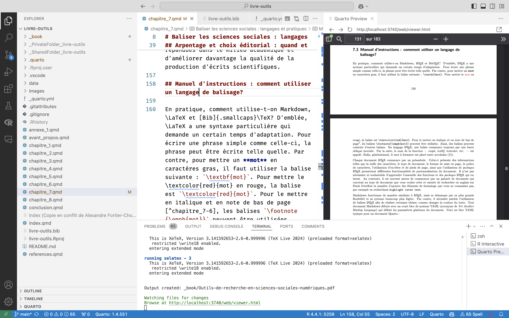
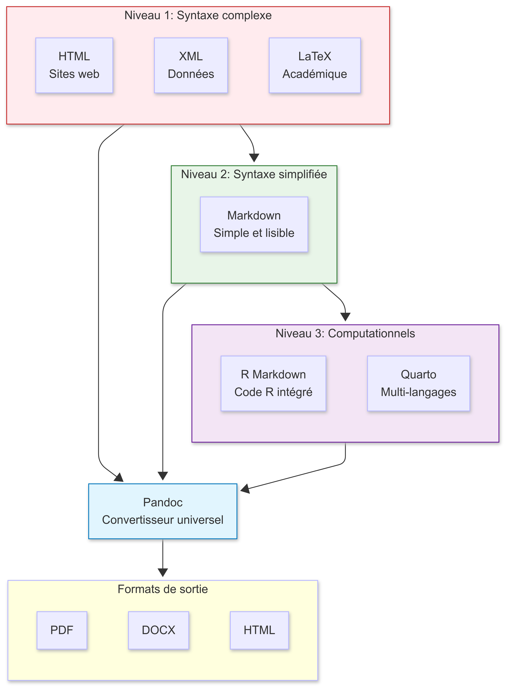
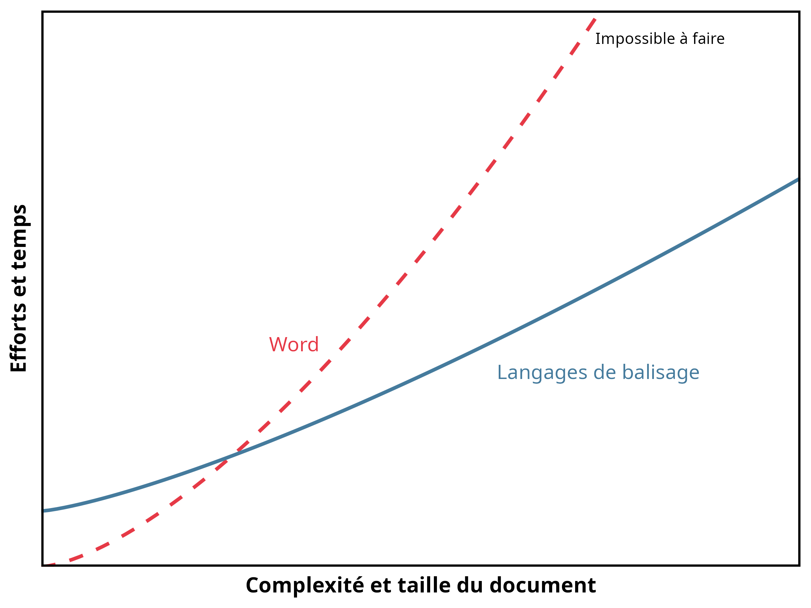
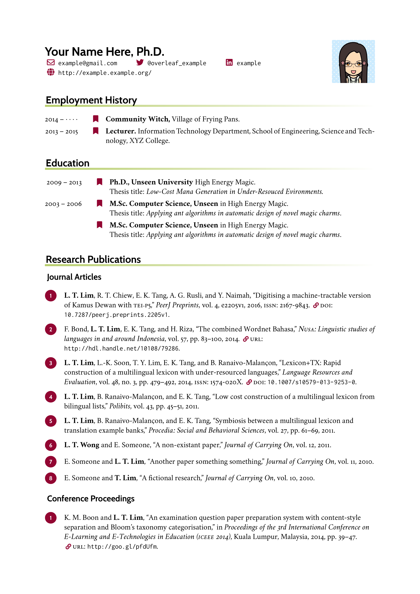
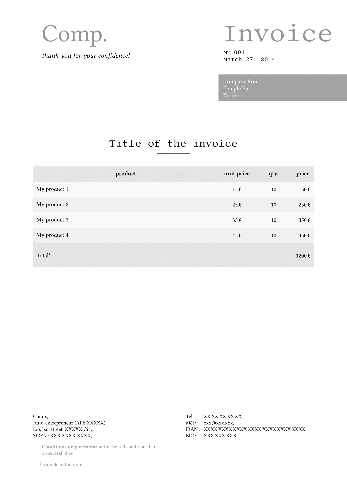
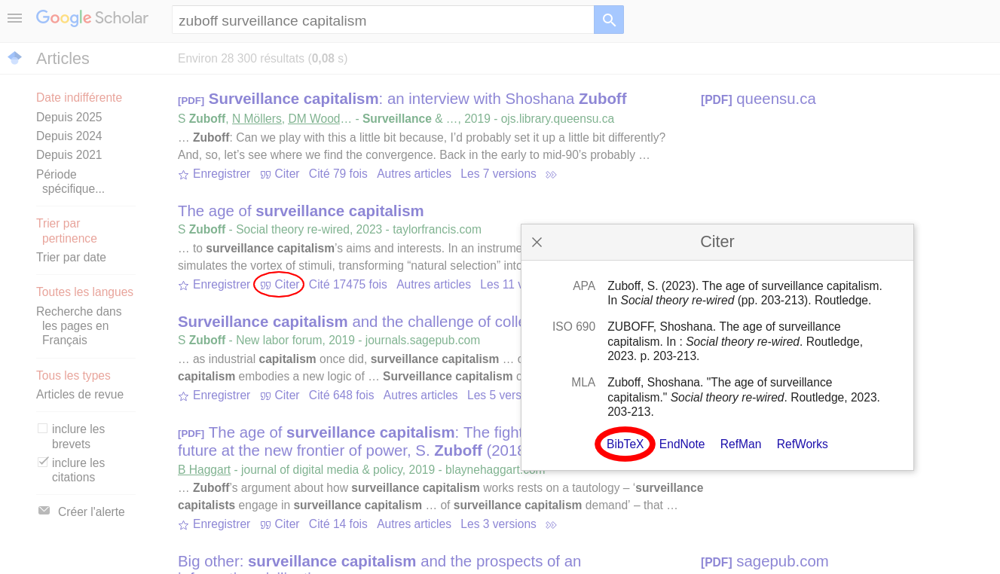
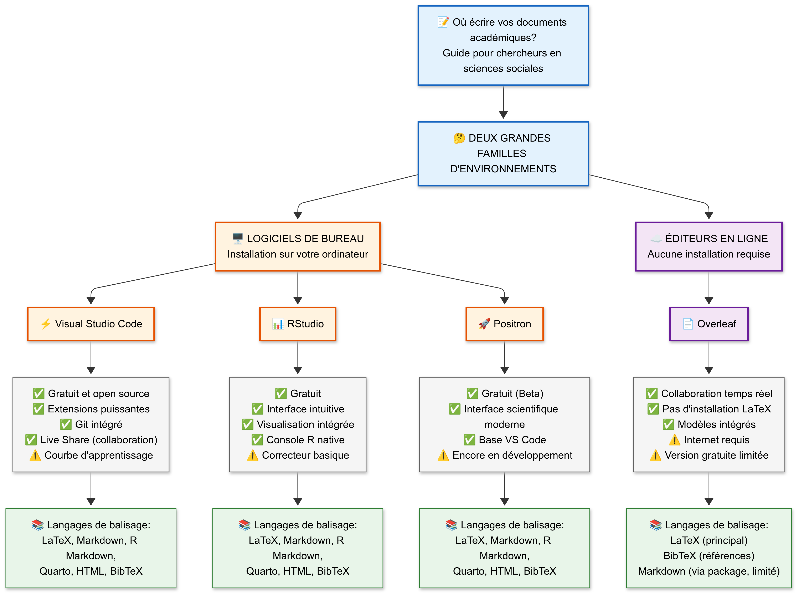

8 Outils de rédaction en sciences sociales numériques : les langages de balisage
Alexandre Fortier-Chouinard (Université Laval)
Étienne Proulx (Université Laval)
Maxime Blanchard (McGill University)

En lisant un article scientifique, une page Web ou un curriculum vitæ professionnel, comme plusieurs lecteurs l’auront sans doute deviné, le texte n’est pas toujours produit à l’aide d’un logiciel de traitement de texte comme Microsoft Word, Apple Pages ou LibreOffice Writer. La mise en page complexe réglée au millimètre près, la qualité des figures et des tableaux, l’utilisation de gabarits professionnels, le style des références ou encore la présence d’éléments interactifs sont difficiles et parfois impossibles à reproduire à l’aide d’un logiciel de traitement de texte régulier. L’ajout d’extraits de code, de tableaux de régression ou encore de figures de haute qualité graphique, ainsi que leur personnalisation, nécessitent une interface particulière.
Pour ces raisons et plusieurs autres, les chercheurs en sciences sociales font souvent appel aux langages de balisage, ou markup languages. Ceux-ci permettent de produire des documents et pages Web sans les limitations des logiciels de traitement de texte. Le présent livre, par exemple, est écrit à l’aide du langage de balisage Markdown avec l’aide du système de publication Quarto. Les logiciels de traitement de texte et les langages de balisage font tous partie de la catégorie des outils de rédaction.
Il est d’ailleurs important de distinguer les langages de balisage des langages de programmation, qui sont abordés plus en détail dans le Chapitre 2. En effet, ceux-ci sont similaires à certains égards, mais ont des vocations différentes. Les deux s’appuient sur un langage informatisé, mais les langages et leurs objectifs diffèrent. Un langage de programmation définit des processus informatisés alors qu’un langage de balisage permet d’encoder du contenu de manière à ce que celui-ci soit lisible tant pour l’humain que pour son ordinateur.
D’entrée de jeu, il peut sembler curieux d’apprendre des langages de balisage alors que les logiciels de traitement de texte sont nombreux, simples d’approche et en amélioration constante. Ce chapitre n’a pas pour objectif de décourager l’utilisation de ces logiciels, qui sont utiles et même souvent essentiels pour la production rapide de documents ainsi que pour des tâches de suivi des modifications et de travail avec des équipes multidisciplinaires. Le chapitre tentera plutôt de démontrer que la maîtrise des langages de balisage constitue un avantage pour ceux qui souhaitent s’initier au monde de la recherche académique, même si quelques difficultés initiales d’apprentissage peuvent se présenter. Il s’agira de répondre, tour à tour, aux trois grandes questions suivantes : Qu’est-ce qu’un langage de balisage ? Comment utiliser un langage de balisage ? Quand et pourquoi utiliser un langage de balisage ? L’accent sera mis sur Quarto ainsi que sur les langages Markdown et LaTeX, bien que d’autres langages soient aussi abordés.
8.1 Point d’observation : qu’est-ce qu’un langage de balisage ?
Un langage de balisage constitue un ensemble de commandes qui peuvent être entremêlées à du texte afin de produire une action informatique. Chaque langage contient son propre ensemble de commandes cohérentes et complémentaires. De manière plus formelle, ces commandes sont nommées balises (tags en anglais) et inscrites par le chercheur au travers du texte. Les balises constituent une manière de communiquer avec le logiciel utilisé dans un langage qu’il peut comprendre. Par exemple, une balise permet d’indiquer au programme qui exécutera la commande que l’on désire qu’une section du texte soit écrite en caractères gras, en italique, à double interligne ou encore que l’on souhaite positionner une image d’une certaine manière au travers du texte. Cette interaction est rendue possible par la standardisation des langages de balisage : chaque balise correspond à une action précise, peu importe le logiciel utilisé, la langue dans laquelle le texte est rédigé, le type d’ordinateur utilisé, etc. Dans le document source, les balises sont entremêlées au contenu du document. Au moment de compiler ce dernier, les balises produisent les actions informatisées qu’elles commandent et laissent comme document final le contenu mis en page tel que défini par l’auteur via les balises utilisées. La compilation est le processus par lequel un document écrit en langage de balisage est transformé en fichier textuel, en format PDF dans le cas de LaTeX par exemple. La Figure 8.1 montre un exemple d’utilisation du langage de balisage Markdown dans un fichier Quarto sur la plateforme-logiciel Visual Studio Code (VS Code). L’écran à droite de l’image montre le fichier PDF résultant du formatage réalisé dans la partie centrale de l’écran. Les balises utilisées sont décrites plus loin dans ce chapitre.
Le premier langage de balisage, le Generalized Markup Language (GML), a été inventé en 1969 par les chercheurs Charles F. Goldfarb, Ed Mosher et Ray Lorie pour la compagnie IBM. Goldfarb et ses collègues devaient intégrer trois applications créées avec des langages différents et avec une logique différente pour les besoins d’un bureau de droit. Même après avoir créé un programme qui permettait aux trois applications d’interagir, ces langages demeuraient différents et avaient chacun leur propre fonctionnement. Le développement de GML a permis de résoudre ce problème en standardisant et en structurant le langage : les mêmes commandes étaient utilisées pour accomplir les mêmes tâches dans chaque programme (Goldfarb, 1996). GML a été amélioré durant les décennies suivantes et a été suivi par d’autres langages de balisage, dont LaTeX en 1985, BibTeX en 1988, HTML en 1993, XML en 1998, Markdown en 2004 et R Markdown en 2012 (Encyclopaedia Britannica, 2023; Hameed, 2023; Markdown Guide, 2023; World Wide Web Consortium, 1998; Xie, 2023).
Les langages de balisage permettent d’effectuer différentes tâches. HTML, qui est sans doute le plus connu des langages de balisage, permet de formater des sites Web. XML, quant à lui, permet de structurer de larges volumes de données. LaTeX permet pour sa part de formater du texte et de créer des documents en format PDF. Markdown permet également de créer des documents en format PDF, mais aussi en format HTML ou DOCX (format utilisé pour les documents Word), contrairement à LaTeX. R Markdown permet aussi d’ajouter des extraits de code R à un fichier en langage Markdown. Enfin, depuis 2022, le système de publication scientifique et technique multilingue Quarto permet de créer des documents qui intègrent des extraits de code R, LaTeX, Python, Julia ou JavaScript, créés dans différents types d’environnements, à un fichier en langage Markdown (Allaire, 2022). LaTeX, Markdown, R Markdown et Quarto permettent aussi d’intégrer les références bibliographiques du système de traitement de références BibTeX. Les langages de balisage communiquent ainsi souvent les uns avec les autres au sein d’un même fichier. Le Chapitre 5 explique la manière de citer les références en langage BibTeX par le biais de Zotero et de Better BibTeX.
Pour mieux comprendre ces différents langages, il est utile de les concevoir selon différents niveaux d’abstraction. L’abstraction, définie comme le processus qui consiste à simplifier des systèmes complexes en se concentrant sur les aspects essentiels (Hazzan, 2002; Kramer, 2007), constitue un concept fondamental en informatique. Dans le contexte des langages de balisage, cette perspective permet de distinguer différents niveaux selon leur complexité syntaxique et leur facilité d’utilisation. Comme le souligne Neumanns (2019), il existe une tension fondamentale entre la facilité d’usage et la puissance pour les documents complexes. Bien que les langages de balisage forment en réalité un continuum entre puissance et simplicité (Arloing et al., 2016), ce chapitre propose de les organiser selon trois niveaux d’abstraction pour faciliter leur compréhension. Cette simplification pédagogique, illustrée dans la Figure 8.2, permet de distinguer les principales approches de balisage selon leur complexité d’usage.

Les langages à syntaxe complexe constituent le premier niveau de cette hiérarchisation. Ces langages nécessitent de spécifier explicitement de nombreux détails techniques (Grätzer, 2008). L’utilisateur doit comprendre et contrôler directement les mécanismes sous-jacents : balises détaillées en HTML, schémas complexes en XML, commandes typographiques précises en LaTeX. Au deuxième niveau, un langage comme Markdown simplifie l’interaction en cachant la complexité technique derrière une syntaxe intuitive (Arloing et al., 2016). L’utilisateur se concentre sur le contenu plutôt que sur les détails de formatage, le système gérant automatiquement la conversion vers différents formats.
Le troisième niveau comprend les systèmes de publication computationnelle. Contrairement aux langages traditionnels qui peuvent être étendus pour supporter l’exécution de code, R Markdown et Quarto sont conçus dès le départ pour intégrer programmation lettrée et recherche reproductible (Allaire, 2022; Knuth, 1984). Ces systèmes masquent automatiquement la complexité du balisage, de l’exécution du code et de la génération de résultats dans un flux de travail unifié. Au cœur de cet écosystème se trouve Pandoc, présenté comme un convertisseur universel de documents (Pandoc - Index, s. d.). Pandoc peut convertir entre de nombreux formats différents grâce à son architecture modulaire : il lit un document dans un format donné, le convertit en représentation intermédiaire, puis l’écrit dans le format de sortie désiré. Cette capacité de conversion universelle explique pourquoi Quarto et R Markdown peuvent produire des documents PDF, DOCX et HTML à partir d’une seule source Markdown. Cette hiérarchisation illustre comment l’abstraction permet de gérer la complexité (Kramer, 2007) : chaque niveau supérieur simplifie l’usage tout en s’appuyant sur les capacités techniques des niveaux inférieurs.
Les balises constituent une manière de donner manuellement des commandes au logiciel utilisé. Par contraste, avec Microsoft Word, une panoplie de boutons permettent de formater le texte. Les balises exercent les mêmes fonctions de formatage pour les fichiers produits en LaTeX ou en Markdown, mais doivent être ajoutées à l’écrit par l’utilisateur. Lorsque l’on appuie sur un bouton pour formater le texte ou que l’on utilise une commande comme Ctrl-G ou Cmd-I dans Word, en réalité, cette commande ajoute des balises au travers du texte, mais rend celles-ci invisibles dans l’interface utilisée. Cela permet d’avoir un texte élégant et facile à lire, mais comporte aussi plusieurs inconvénients. Le principal inconvénient est de limiter le pouvoir de l’utilisateur sur le formatage de son texte. En effet, si les boutons à sa disposition dans le logiciel de traitement de texte ne lui permettent pas de réaliser une action, celle-ci sera éternellement impossible à réaliser pour lui. A contrario, les langages de balisage permettent un contrôle presque infini sur les opérations que l’on souhaite réaliser. Incidemment, dans la mesure où l’on utilise le langage approprié pour la tâche que l’on souhaite accomplir, il est possible de donner exactement la commande nécessaire pour réaliser cette action. Bien que l’utilisation de langages de balisage puisse paraître complexe à première vue, il convient de rester attentif aux avantages qu’ils procurent. Les langages de balisage, au-delà du coût d’apprentissage et de l’interface de travail moins intuitive qu’un document Word, offrent notamment une plus grande flexibilité.
Afin d’utiliser un langage de balisage, il est impératif que le logiciel ou environnement de développement intégré utilisé puisse prendre en compte ce langage. Un logiciel permet rarement d’utiliser n’importe quel langage. Par exemple, le logiciel TeXShop permet seulement d’utiliser le langage LaTeX. Il est aussi important de bien utiliser le langage de balisage. En effet, comme pour les langages de programmation, les langages de balisage ne peuvent pas déduire ce que l’on souhaite leur faire comprendre. Pour mettre du texte en gras, il faut utiliser les bonnes balises. La moindre erreur peut être coûteuse, puisqu’une erreur dans la balise utilisée risque de produire une commande incompréhensible et un message d’erreur, le logiciel ne réussissant pas à associer la balise mal inscrite à une action informatisée. Conséquemment, il est impératif de bien vérifier les balises utilisées afin d’éviter toute erreur qui empêcherait le document d’être compilé, c’est-à-dire d’être traduit dans son format final1. Chaque caractère dans une balise est important et il y a rarement plus d’une seule manière de commander une action. Par exemple, en LaTeX, il n’y a qu’une seule manière de mettre du texte en gras. Il faut précisément utiliser cette commande : \textbf{}. Le positionnement des balises est lui aussi critique : il délimite la portion de texte à laquelle doit être appliquée l’action commandée par la balise.
Dans le contexte de la recherche en sciences sociales, la programmation est généralement utilisée afin de récolter, d’analyser et de présenter visuellement des données. Une fois cartes, tableaux et graphiques produits, ceux-ci peuvent être enregistrés (par exemple en format PDF ou PNG) et inclus au sein d’un document qui sera formaté en utilisant un langage de balisage. En R Markdown et en Quarto, des extraits de langage de programmation peuvent être inclus dans des sections bien délimitées de documents écrits en langage de balisage. Plus généralement, le langage de programmation contribue à l’analyse alors que le langage de balisage est essentiellement utile afin de présenter les travaux de recherche, que ce soit dans un document écrit ou sur un site Web. C’est principalement de cette manière que sont utilisés les langages de programmation et de balisage dans le cadre de la recherche en sciences sociales.
8.2 Arpentage et choix éditorial : quand et pourquoi utiliser un langage de balisage ?
La plupart des langages de balisage permettent de remplir l’une des deux fonctions suivantes, qui sont particulièrement importantes dans le contexte de la recherche en sciences sociales : produire des documents écrits et formater des pages Web. Dans les deux cas, ces actions peuvent être réalisées à partir de logiciels simples, mais ces logiciels ont des limites importantes auxquelles les langages de balisage apportent des solutions2.
Pour l’écriture de documents très simples comme une liste d’épicerie ou des notes rapides pendant une conférence, les logiciels de traitement de texte sont tout à fait convenables : ils sont simples et rapides à utiliser, un formatage professionnel du document n’est pas de mise. Utiliser un langage de balisage pour des tâches de base peut en effet rendre la tâche inutilement longue et complexe. Toutefois, plus la complexité d’un document augmente, plus il devient difficile d’obtenir un résultat satisfaisant en utilisant un logiciel de traitement de texte tel que Word, Pages ou Writer. A contrario, LaTeX permet de produire des documents de tous les niveaux de complexité, tel que démontré sur la Figure 8.3. Quant à Markdown, sa courbe d’apprentissage se situerait logiquement entre celles de LaTeX et de Word, puisque ses balises sont simplifiées. Plus généralement, utiliser un langage de balisage comme LaTeX ou Markdown3 comporte plusieurs avantages par rapport aux logiciels de traitement de texte traditionnels (voir le Tableau 8.1). Ces avantages font tous appel à un mélange de quatre concepts principaux : automatisation, personnalisation, flexibilité et qualité graphique.

| Critères | LaTeX | R Markdown | Quarto | Word |
|---|---|---|---|---|
| Accessibilité | Gratuit | Gratuit | Gratuit | Dispendieux |
| Existence d'une communauté d'utilisateurs | Très grande | Grande | En croissance1 | Très grande |
| Popularité en sciences sociales | Très populaire | Populaire | De plus en plus populaire | Très populaire |
| Compatibilité avec d'autres outils | Facilement compatible | Facilement compatible | Facilement compatible | Demande un peu d'ajustement |
| Transparence et réplicabilité | Excellente2 | Excellente | Excellente | Faible |
| Adaptabilité et flexibilité | Très flexible | Très flexible | Très flexible | Flexible |
| 1 Quarto est relativement récent et semble prendre de plus en plus la place de R Markdown parmi la communauté d'utilisateurs de R. Le nombre d'utilisateurs de Quarto est donc appelé à croître dans les prochaines années. | ||||
| 2 Bien que LaTeX offre une bonne transparence et réplicabilité, son utilisation via Overleaf peut être limitée sans version payante, notamment pour l'intégration avec GitHub et Dropbox. Ces limitations ne s'appliquent pas à des environnements comme RStudio ou VS Code. | ||||
8.2.1 Avantages
8.2.1.1 Référencement
Premièrement, LaTeX et Markdown permettent d’intégrer une bibliographie automatique et professionnelle en utilisant BibTeX. Cette bibliographie peut être adaptée très facilement en différents styles bibliographiques reconnus ou en un style bibliographique personnalisé à partir d’un des nombreux gabarits professionnels disponibles. Avec BibTeX, il n’y a pas à vérifier si le titre de l’article est toujours en italique, si le numéro de volume est toujours entre parenthèses ou si le nom de famille des deuxièmes auteurs est toujours avant ou après le prénom puisque toutes ces opérations sont effectuées de manière automatique. BibTeX comprend également les différences entre les types de sources (articles scientifiques, livres, sites Internet, etc.) et ajuste leur présentation en conséquence. De plus, si l’une des sources citées n’est pas incluse dans la bibliographie, une erreur s’affiche, permettant d’identifier le problème plutôt que de se retrouver avec une référence manquante. À l’inverse, si une source est retirée du texte, elle disparait automatiquement de la bibliographie dans le document final mais demeure présente dans le fichier où se trouvent les références bibliographiques. Cela évite les aller-retour pour vérifier que chaque source de la bibliographie se trouve au moins une fois dans le texte et que chaque source dans le texte est citée en bibliographie. Grâce aux balises, en cliquant sur les références incluses dans le document, on se retrouve immédiatement plus loin dans le document, à l’endroit où se trouve l’entrée bibliographique associée. Les références BibTeX pour articles scientifiques peuvent généralement être copiées-collées à partir de Google Scholar, en cliquant en dessous d’une source sur « Citer » puis « BibTeX ». BibTeX rend donc extrêmement simple et efficace l’utilisation des références bibliographiques grâce à sa capacité à personnaliser et automatiser leur présentation4.
8.2.1.2 Figures et tableaux
L’intégration de figures et de tableaux dans le texte est aussi rendue très simple et professionnelle grâce à LaTeX et à Markdown. La taille de la figure ou du tableau, son positionnement et son intégration par rapport au texte environnant peuvent être réglés avec précision. Cependant, l’ajout de texte avant ou après la figure ou le tableau ne produira pas des résultats inattendus tels qu’une demi-page vide avant un graphique ou un titre de tableau complètement en bas d’une page. En définissant des paramètres pour l’ensemble du texte, le chercheur peut personnaliser entièrement la présentation des figures et des tableaux. De plus, la qualité des figures et des tableaux ne diminue pas lors de leur intégration : les figures restent aussi belles qu’elles l’étaient originalement, ce qui n’est pas toujours le cas dans les logiciels de traitement de texte. Les figures et les tableaux sont aussi numérotés automatiquement, ce qui veut dire que l’utilisateur n’a jamais à se préoccuper de modifier les numéros si l’ordre des figures et tableaux est modifié dans le texte. Grâce aux balises, en cliquant sur le numéro associé à la figure ou au tableau dans le texte, le document se retrouve automatiquement à l’endroit où se trouve la figure ou le tableau. De plus, les figures peuvent être intégrées en format PDF, ce qui permet au lecteur de sélectionner le texte se trouvant sur le graphique directement, incluant les titres des axes et les annotations, ce qui n’est pas possible avec les images PNG intégrées dans Word ou autres logiciels similaires.
Surtout, l’intégration de graphiques produits par R au texte en langage de balisage est simplifiée et automatisée. En effet, même lorsque les données ou le code pour produire un graphique changent, R resauvegarde le fichier dans le même chemin d’arborescence (path) particulier que l’on a indiqué, par exemple C:/Users/Jean/Dropbox/projet1/graphs/Figure1.pdf. Le langage de balisage peut ensuite indiquer le même chemin d’arborescence, de sorte qu’il n’est pas nécessaire de recopier-coller la figure à l’intérieur du document chaque fois que des changements y sont apportés ; la figure est mise à jour automatiquement. En plus, les figures et tableaux qui sont ajoutés peuvent être automatiquement ajoutés à une liste de tableaux et à une liste de figures juste après la table des matières, dans le cas d’une thèse par exemple.
L’intégration de figures et de tableaux est particulièrement simple et flexible avec Quarto. Contrairement à LaTeX, qui nécessite la production de tableaux et de figures dans un document en langage de programmation (comme R), Quarto permet de créer une figure grâce à du code R et d’intégrer celle-ci au texte dans un même document. Cela se fait grâce à l’intégration de blocs de code R (code chunks) dans le document. Le code est produit dans le bloc de code et la figure ou le tableau qui en résulte apparait à la fois dans le document Quarto, où des balises supplémentaires permettent d’adapter le formatage, et sur le document fini. Cependant, certains packages R tels que modelsummary et stargazer permettent de créer des tableaux de régression de grande qualité en format LaTeX (Arel-Bundock, 2022; Hlavac, 2022). Les tableaux de régression en format Markdown sont pour l’instant plus difficiles à produire au-delà d’un certain niveau de complexité, en raison des limitations du langage Markdown. Cela dit, il est facile de produire des tableaux de très grande qualité en langage LaTeX dans un fichier Markdown ou Quarto.
8.2.1.3 Équations
LaTeX permet également d’ajouter des équations mathématiques poussées pour les projets de recherche qui les nécessitent. En effet, il existe des balises pour chaque symbole mathématique, et celles-ci peuvent être agencées de manière à former des équations cohérentes. Ces équations peuvent être intégrées au sein même d’une phrase ou être mises de l’avant dans un paragraphe à part centré. Voici un exemple d’équation pour une régression multiple écrite en LaTeX :
\[\begin{equation} Y = \beta_0 + \beta_1 X_1 + \beta_2 X_2 + \beta_3 X_3 + \cdots + \beta_k X_k + \epsilon \end{equation}\]
8.2.1.4 Table des matières et mise en page
Markdown et LaTeX permettent aussi la gestion automatisée de la table des matières, et les références aux pages appropriées à partir de la table des matières se mettent à jour en continu. La table des matières prend en compte l’architecture du texte choisie manuellement par le chercheur, qui est définie par des balises définissant différents niveaux hiérarchiques de sections, sous-sections ou chapitres. Des manières automatiques de référencer les figures et les tableaux dans des sections distinctes de la table des matières sont également offertes, encore une fois personnalisables au goût du chercheur.
Bien que la mise en page de documents produits via Markdown et LaTeX puisse être définie entièrement manuellement par les personnes plus expérimentées, les novices apprécieront les nombreux gabarits (templates) qui permettent de gérer automatiquement la mise en page clés en main. Les gabarits permettent de rendre l’apparence d’un document plus esthétique et uniforme et peuvent être utilisés tels quels ou servir de point de départ pour un chercheur souhaitant y apporter certaines modifications sans toutefois partir d’une feuille blanche. La majorité des personnes qui utilisent ces langages, même les plus expérimentées, utilisent ces gabarits comme base lorsqu’elles rédigent un document. Ces gabarits constituent une mine d’or puisqu’ils rendent accessible le code Markdown ou LaTeX ayant servi à la conception du gabarit, permettant au chercheur de comprendre comment est obtenu le résultat que lui offre le gabarit. Incidemment, il est possible d’identifier les sections de code produisant certains éléments de mise en page (positionnement des numéros de page, positionnement du nom des auteurs en début de document, etc.) et les modifier ou s’en inspirer afin de modifier d’autres gabarits. L’utilisation de ces gabarits peut s’avérer complexe au départ, mais retravailler ces gabarits peut permettre de devenir autonome et de produire exactement le résultat désiré en termes de mise en page, et surtout de les réutiliser. En comparaison, les logiciels de traitement de texte rendent souvent très ardue la mise en page uniforme d’un document, puisque cet élément ne peut pas être automatisé. La liste des gabarits disponibles est extrêmement large, et ceux-ci ont une variété de fonctions. En effet, une variété de gabarits professionnels et de haute qualité graphique sont offerts gratuitement en ligne pour des articles, des livres, des rapports, des curriculum vitæs (Figure 8.4) ou encore des factures professionnelles (Figure 8.5).


La Figure 8.4 et la Figure 8.5 ne sont que quelques exemples des milliers de gabarits de documents LaTeX disponibles en ligne. Plusieurs d’entre eux peuvent être téléchargés à partir du site Web d’Overleaf (2023). Les utilisateurs peuvent y naviguer et voir quel gabarit convient le mieux à leurs besoins. Certaines manières plutôt spécifiques de formater le texte sont présentement disponibles avec LaTeX ou Markdown bien que non disponibles en Word, ce qui constitue une autre démonstration de leur grande flexibilité et capacité de personnalisation. Bien qu’il soit rare que l’on ait absolument besoin de personnaliser le texte ainsi, ces possibilités peuvent s’avérer utiles lorsque l’on rédige un texte qui doit se conformer en tout point à un gabarit spécifique. En effet, certaines revues scientifiques, maisons d’édition et universités, dans le cadre de la rédaction d’articles, de mémoires et de thèses par exemple, imposent ce type de gabarit inflexible et parfois plutôt capricieux.
8.2.1.5 Compatibilité entre types de documents
Un autre avantage non négligeable de Markdown, qui le distingue à cet égard de LaTeX, est la flexibilité des formats de documents qui peuvent être produits. En effet, Pandoc Markdown, une extension du langage Markdown de base, permet d’intégrer dans un seul document plusieurs langages de balisage différents tels que Markdown, LaTeX et HTML. Quarto utilise Pandoc Markdown et est également habilité à travailler avec des extraits de code R ou Python. Ceci permet donc à l’utilisateur de bénéficier des fonctionnalités de différents langages dans un seul document, rendant ainsi possible une variété de personnalisations qui ne seraient pas possibles autrement. Qui plus est, puisque Markdown permet de créer des fichiers Word réguliers, PDF professionnels et HTML à partir d’un même document, l’utilisateur peut choisir à sa convenance et à tout moment de quelle manière sera compilé le document rédigé. Cette possibilité de créer des documents Word est particulièrement pratique dans le cadre de collaboration avec des chercheurs n’utilisant pas les langages de balisage ainsi que lors de l’envoi de manuscrits à des revues scientifiques, puisque certaines d’entre elles exigent de recevoir ceux-ci sous forme de document Word.
8.2.1.6 Popularité
La popularité de certains langages de balisage dans le monde de la recherche confère un avantage considérable à ceux qui savent les utiliser. La maîtrise de ces langages offre aux chercheurs une polyvalence lorsqu’ils doivent collaborer avec diverses équipes de recherche utilisant différentes méthodes de travail. Par exemple, depuis sa création, LaTeX a été adopté largement par le milieu de la publication de travaux scientifiques (Gaudeul, 2007). À titre indicatif, Overleaf, l’éditeur en ligne mentionné précédemment, était utilisé en 2022 par 11 millions d’utilisateurs dans 189 pays autour du globe. Plus de 2000 compagnies et 6800 universités utilisent Overleaf pour écrire en LaTeX (Overleaf, 2024). La popularité des langages de balisage en fait donc des outils utiles pour une personne qui voudrait poursuivre une carrière en recherche académique.
8.2.1.7 Gestion des embûches
Bien que l’apprentissage de LaTeX et de Markdown puisse être parsemé de nombreuses embûches, ces deux langages bénéficient d’une communauté d’utilisateurs en ligne sur laquelle il est possible de s’appuyer afin de résoudre tout problème rencontré, vu la popularité de ces langages. Ces individus, particulièrement les plus expérimentés, sont nombreux à partager leur expérience à leurs collègues rencontrant des problèmes afin de contribuer à régler ceux-ci. Cette communauté est présente sur une multitude de sites Web, bien que le point de rencontre principal soit le forum Stack Overflow (2023), qui est également utilisé pour régler des problèmes de programmation. Une simple recherche sur Google d’un problème rencontré avec LaTeX ou Markdown offrira des liens vers des échanges pertinents ayant eu lieu sur Stack Overflow ou encore vers de la documentation technique. L’utilisateur peut donc filtrer les résultats et observer les nombreuses solutions envisageables à son problème afin de définir laquelle est la plus appropriée dans sa situation. Il est important de noter, toutefois, que cette communauté est nettement plus développée pour les utilisateurs de LaTeX que de Markdown, puisque ce dernier langage est moins répandu que le premier.
Également, avec l’émergence de l’intelligence artificielle (IA), de nombreux modèles d’IA génératifs commencent à émerger comme des ressources d’aide utiles pour les chercheurs. Les auteurs du présent chapitre prônent une attitude de curiosité par rapport au développement des différents systèmes d’IA qui peuvent venir assister l’utilisateur d’un langage de balisage. Par exemple, au moment de la rédaction du présent chapitre, plusieurs grands modèles de langage (large language models, LLM) sont disponibles pour le grand public, incluant les modèles de ChatGPT (OpenAI), Claude (Anthropic), Gemini (Google), etc. D’autre part, l’utilisation d’agents d’IA tels que Claude Code (Anthropic), OpenCode (Anomaly) et Codex (OpenAI) faisant appel à plusieurs modèles permet de générer ou de corriger du texte en langage de balisage. Pour en savoir plus sur l’utilisation des outils d’IA en recherche, le Chapitre 9 offre une vue d’ensemble sur ces questions.
Le développement des outils faisant appel à l’IA est rapide et constant. Il n’existe donc pas une seule bonne manière d’utiliser l’IA, et les pratiques d’utilisation changent rapidement. Le lecteur est encouragé à se tenir à jour par rapport à celles-ci et à expérimenter différents flux de travail assistés par l’IA en ce qui concerne la rédaction en langages de balisage. Le corpus de données sur lequel différents LLM sont formés inclut une grande variété de langages et de styles d’écriture, incluant LaTeX et Markdown. Ainsi, il est possible de poser des questions en langage courant aux modèles ou agents lorsque des problèmes de balisage sont rencontrés. Ceux-ci fourniront en réponse le texte avec les balises adéquates pour régler le problème ou le régleront directement dans votre fichier. Cela s’applique même pour des problèmes pour lesquels la réponse n’est pas directement indiquée sur Stack Overflow, lorsque la logique des langages est comprise par ces modèles basés sur l’IA. Il arrive que les réponses des modèles de langage soient erronées, tout comme certaines réponses sur Stack Overflow peuvent ne pas être adaptées à régler un problème similaire vécu sur un autre ordinateur, avec des paramètres différents. Il demeure donc important de vérifier les réponses des modèles basés sur l’IA afin de ne pas avoir de mauvaises surprises lors de la compilation du code. Ainsi, il est utile de s’appuyer autant sur la communauté d’utilisateurs de langages de balisage qui échange des ressources en ligne que sur les modèles de langage basés sur l’IA.
8.2.1.8 Philosophie du code source ouvert et du logiciel libre
L’utilisation des langages de balisage s’inscrit bien dans la philosophie du logiciel libre. Le langage LaTeX est distribué sous la licence LaTeX Project Public License (LPPL), alors que Quarto 1.4 est distribué sous la licence du Massachusetts Institute of Technology (MIT). Moyennant le respect de leurs licences respectives, ces licences permettent ainsi aux utilisateurs de LaTeX et de Quarto d’utiliser ces langages comme ils le souhaitent, de redistribuer des copies, de modifier le fonctionnement de ces langages et d’en redistribuer des versions améliorées. Bien que LaTeX et Quarto ne soient pas des logiciels, leur licence d’utilisation est cohérente avec la philosophie du logiciel libre et permet à ces langages d’être utilisés dans de nombreux logiciels.
D’autre part, LaTeX et Quarto sont deux langages à code source ouvert (open source). Ainsi, leur distribution est entièrement gratuite, il n’y a rien à payer. Leur code source est disponible et les changements à ce code doivent être indiqués. Les licences LPPL et MIT ne discriminent pas certains groupes ou personnes, et elles ne restreignent personne dans l’utilisation pour un domaine d’activité. Ces deux licences ne sont pas spécifiques pour un produit, ce qui signifie que ces deux langages peuvent être utilisés dans plusieurs logiciels et programmes, dont certains sont payants (Overleaf comporte ainsi une version payante). Ces licences sont également technologiquement neutres, rendant ainsi LaTeX et Quarto accessibles aux utilisateurs de tous les systèmes d’exploitation.
8.2.2 Inconvénients
Il existe toutefois des désavantages inhérents à l’utilisation des langages de balisage. L’un des principaux désavantages de Markdown et de LaTeX est le fait qu’ils ne comportent aucun système de suivi des modifications lors de travaux collaboratifs. Pour réviser un travail fait en langage de balisage, des commentaires peuvent être ajoutés sur le fichier sortant (nécessairement PDF pour un fichier sortant produit avec LaTeX). Des commentaires peuvent aussi être faits directement dans le document LaTeX ou Markdown, à l’aide de balises spécifiques. Ces commentaires n’apparaissent cependant pas dans le fichier sortant. Le suivi des modifications en LaTeX et Markdown nécessite donc souvent l’utilisation de Git et de GitHub, qui sont abordés plus en détail dans le Chapitre 4. Même avec une plateforme de gestion des versions comme GitHub, les longs paragraphes ayant fait l’objet de plusieurs modifications peuvent être longs à comparer par rapport aux logiciels de traitement de texte, qui permettent de visualiser les propositions d’ajouts et de retraits de caractères de manière plus intuitive. Le suivi des modifications en logiciel de traitement de texte permet également de distinguer les auteurs de différents commentaires par leurs noms, alors que les ajouts et retraits itératifs en GitHub peuvent rendre difficile l’identification de l’auteur d’une modification. Pour ces raisons, et aussi pour faciliter la mise en page par les éditeurs, certaines revues scientifiques refusent les fichiers PDF et demandent que les soumissions soient faites en format DOCX, ce qui pose problème pour les utilisateurs de LaTeX mais pas ceux de Markdown ou Quarto.
Les langages de balisage comportent également un autre désavantage important dans certains cas : l’absence d’un correcteur de fautes de français complet, en particulier pour corriger les fautes autres que celles d’orthographe en français. Parmi les principaux endroits permettant l’édition en langages de balisage, Visual Studio Code (VS Code) et Overleaf comprennent tous deux une extension LanguageTool (LTeX pour VS Code, à ne pas confondre avec LaTeX), qui permet la révision orthographique et syntaxique dans plusieurs langues. VS Code possède également une extension Antidote pour les personnes qui paient déjà pour ce logiciel. D’autres extensions linguistiques existent également pour VS Code, de même que pour les logiciels de traitement de texte comme Word.
Positron, l’environnement de développement de Posit présenté au Chapitre 2, est construit sur la même base technologique que VS Code. Il accepte donc les mêmes extensions de vérification, LanguageTool comprise. Il n’offre en revanche aucun correcteur intégré. L’équipe de développement suit cette demande depuis 2023, en reconnaissant qu’une expérience d’écriture agréable dès l’installation supposerait de ne pas avoir à chercher une extension, mais rien n’était livré au moment d’écrire ces lignes.5
Cependant, RStudio ne possède qu’un correcteur orthographique de base, disponible en plusieurs langues. Ce correcteur ne repère pas les erreurs de syntaxe, de grammaire ou de forme, entre autres. Ces éléments sont pourtant essentiels pour la rédaction de textes académiques6, d’autant plus que les utilisateurs de LaTeX ont tendance à faire davantage de fautes d’orthographe et de grammaire lors de la rédaction que les utilisateurs de Word (Knauff & Nejasmic, 2014). Bien que RStudio soit excellent pour la programmation en R et l’analyse de données, les auteurs du présent ouvrage suggèrent fortement que les utilisateurs des langages de balisage fassent appel à VS Code, Positron, ou Overleaf plutôt qu’à RStudio pour l’édition de leurs documents, afin de profiter d’extensions de correction grammaticale plus complètes comme LanguageTool/LTeX. Une approche hybride (RStudio pour l’analyse de données, Positron/VS Code/Overleaf pour la rédaction) peut s’avérer particulièrement efficace.
Enfin, les langages de balisage, contrairement aux logiciels de traitement de texte, nécessitent d’être compilés, ce qui implique que deux fichiers coexistent : le fichier où le langage de balisage est utilisé (format .tex pour LaTeX, .md pour Markdown ou encore .qmd pour Quarto) ainsi que le fichier où le texte final balisé apparait (généralement .pdf, .docx ou .html). La compilation peut prendre un temps variable selon la complexité du document, mais dure typiquement une quinzaine de secondes. Le fait de devoir travailler avec deux fichiers en parallèle et de ne pas voir immédiatement l’effet des balises sur le document final constitue ainsi un autre désavantage des langages de balisage.
LaTeX comporte aussi quelques difficultés techniques particulières qui peuvent être réglées ou diminuées en travaillant en Markdown. Premièrement, LaTeX est difficile à apprendre. Certaines tâches qui peuvent sembler simples comme l’ajout d’un tableau peuvent nécessiter de nombreuses lignes de code. De plus, à la moindre erreur de frappe dans l’utilisation d’une balise, le code risque de ne pas fonctionner et de ne pas produire le document PDF souhaité. C’est ce qu’on appelle une erreur de compilation. Markdown est un langage plus simple à apprendre, avec des balises plus courtes et intuitives. Il occasionne donc moins d’erreurs de compilation.
Deuxièmement, LaTeX est peu compatible avec les logiciels de traitement de texte comme Word. Dans un sens, pour transférer un fichier créé à partir d’un logiciel de traitement de texte vers LaTeX, les balises doivent être ajoutées manuellement une par une. Dans l’autre sens, pour transférer un document LaTeX vers un fichier de traitement de texte, le convertisseur Pandoc peut être utilisé, mais celui-ci ne repère pas toutes les balises. Il est alors souvent nécessaire de faire des aller-retour entre le fichier LaTeX original et le fichier converti en format DOCX pour s’assurer du succès de la conversion. Parfois, les balises doivent même être retirées une par une et le formatage doit être refait en utilisant les boutons fournis sur le logiciel de traitement de texte. Une autre option consiste à copier le texte directement à partir du fichier PDF produit par LaTeX vers un logiciel de traitement de texte, mais cette méthode présente aussi des défis : les fins de ligne sont interprétées par Word, Pages ou Writer comme des retours plutôt que des espaces, et les accents sont souvent mal copiés et doivent être réécrits manuellement.
Markdown et Quarto évitent en grande partie ce problème en permettant d’écrire un fichier DOCX à partir du langage de balisage. Le formatage du fichier DOCX demeure un peu compliqué cependant et doit être fait à partir du modèle d’un autre document DOCX formaté tel que souhaité. Quarto facilite particulièrement cette tâche en permettant d’écrire un texte en format Markdown et de produire un fichier DOCX à partir d’un gabarit Word. Cependant, les fichiers DOCX ne peuvent toujours pas être transformés en format Markdown. Pour les fichiers Word à transformer en format Markdown, les balises plus simples en Markdown qu’en LaTeX rendent néanmoins la tâche plus simple.
Somme toute, Word n’est pas à antagoniser et demeure très utile pour des tâches simples. Cependant, dans le monde académique, la production de fichiers de qualité faisant appel à des graphiques, tableaux et blocs de code personnalisés de qualité et automatisés est simplifiée en utilisant des langages de balisage. Il n’est ainsi pas anodin que ces langages soient adoptés par plusieurs dans le monde académique, surtout pour la rédaction de manuscrits au formatage très strict comme des mémoires et des thèses (plusieurs universités possèdent ainsi des gabarits LaTeX de mémoires et de thèses). Pour ces raisons, il est avantageux pour une personne poursuivant des études supérieures en sciences sociales, par exemple, de passer outre la difficulté initiale d’apprentissage des langages de balisage. L’apprentissage de ces langages permettra de s’aligner sur les pratiques répandues dans le milieu académique et d’améliorer davantage la qualité de la production d’écrits scientifiques.
8.3 Manuel d’instruction : comment utiliser un langage de balisage ?
En pratique, comment utilise-t-on Markdown, LaTeX et BibTeX ? D’emblée, LaTeX a une syntaxe particulière qui demande un certain temps d’adaptation. Pour écrire une phrase simple comme celle-ci, la phrase peut être écrite telle quelle. Par contre, pour mettre un mot en caractères gras, il faut utiliser la balise suivante : \textbf{mot}. Pour mettre le mot en rouge, la balise est \textcolor{red}{mot}. Pour le mettre en italique et en note de bas de page7, les balises \footnote{\emph{mot}} peuvent être utilisées. Ainsi, des balises peuvent contenir d’autres balises. En langage LaTeX, une balise commence toujours par une barre oblique inversée. Par la suite, le nom de la fonction (emph, textbf, textcolor, etc.) est appelé. Enfin, généralement, le mot à formater est placé entre accolades ({}).
Chaque document LaTeX commence par un préambule. Celui-ci présente des informations telles que la taille des caractères, le type de document, le format de mise en page, la police de caractères, l’utilisation d’en-têtes et de pieds de page, ainsi que l’utilisation de packages LaTeX permettant différentes fonctionnalités de personnalisation du document. Il n’est pas nécessaire ni souhaitable d’apprendre l’ensemble des fonctions et des packages LaTeX qui existent. Au contraire, il est souvent mieux pour l’utilisateur de commencer par un gabarit de document qui convient au type de document désiré et ensuite de rechercher en anglais sur Stack Overflow la manière d’ajouter des éléments de formatage qui lui sont inconnus, par exemple en recherchant highlight latex text.
Markdown fonctionne de manière similaire à LaTeX, mais se démarque par sa plus grande flexibilité et sa syntaxe beaucoup plus légère. Par contre, il nécessite parfois l’utilisation de balises LaTeX afin de réaliser certaines tâches, comme changer la couleur du texte. Tout document Markdown débute avec un court bloc de syntaxe YAML (acronyme de Yet Another Markup Language) qui définit les paramètres généraux du document. Voici un bloc YAML typique pour un document Quarto :
---
title: "Baliser les sciences sociales"
subtitle: "Langages et pratiques"
date: today
author:
- Alexandre Fortier-Chouinard^[Université Laval]
- Étienne Proulx^[Université Laval]
- Maxime Blanchard^[McGill University]
format: pdf
toc: true
date-format: "MMMM D, YYYY"
bibliography: other_files/livre-outils.bib
---Outre le titre, le sous-titre et le nom des auteurs, on trouve aussi dans l’en-tête YAML la présence d’une table des matières (toc), la date et son format, le format du document compilé (dans ce cas-ci, PDF) ainsi que le chemin d’arborescence afin d’accéder au document BibTeX où sont enregistrées les références utilisées. Il est aussi possible d’y définir la taille de la police de caractères ou encore le gabarit Word servant à définir le format d’un document DOCX à produire. De manière particulièrement importante, l’entête YAML est l’endroit où sont chargés les packages LaTeX qui seront utilisés. En effet, la majorité des packages et fonctions LaTeX sont utilisables dans Markdown, alors que l’inverse n’est pas vrai. Il est donc possible de personnaliser un document Markdown en utilisant des packages ayant été créés pour LaTeX.
La syntaxe à utiliser au travers du texte en Markdown est somme toute plutôt simple. Pour mettre un ou plusieurs mots en gras, il suffit de les entourer de deux astérisques (**mots en gras**) ; pour les mettre en italique, il faut les encadrer d’un seul astérisque (*en italique*). Pour définir un titre de section ou de sous-section, il suffit de mettre des # devant le titre en question. Plus on ajoute de #, plus le titre sera petit et plus il sera considéré à un niveau hiérarchique inférieur dans la structure du texte. La syntaxe Markdown est donc plus légère que celle de LaTeX, dans le but d’en rendre la lecture plus simple pour les utilisateurs.
Bien que des gabarits Markdown soient disponibles, ceux-ci sont plus rares. Ils se trouvent pour la plupart sur GitHub et sont rendus disponibles par leur créateur. Cela étant dit, leur personnalisation peut s’avérer plutôt complexe. En somme, Markdown est particulièrement pratique pour les documents ne nécessitant pas de respecter un gabarit précis et requérant simplement un document d’allure simple et professionnelle.
Pour sa part, BibTeX a une syntaxe relativement simple. D’emblée, les références BibTeX pour des articles et ouvrages scientifiques sont disponibles sur Google Scholar. La Figure 8.6 montre comment accéder facilement à ces références. Toutefois, pour citer des sites Web ou des articles de médias, la référence doit être écrite à la main selon un format précis. Une bibliographie sur BibTeX peut ressembler à ceci :
@book{darwin03,
address = {London},
author = {Darwin, Charles},
publisher = {John Murray},
title = {{On the Origin of Species by Means of Natural Selection
or the Preservation of Favoured Races in the Struggle for Life}},
year = {1859}
}
@article{goldfarb96,
title={The Roots of SGML: A Personal Recollection},
author={Goldfarb, Charles F},
journal={Technical communication},
volume={46},
number={1},
pages={75},
year={1999},
publisher={Society for Technical Communication}
}
Un fichier BibTeX ne contient rien de plus qu’une série de publications commençant chacune par la balise @ suivie du type d’article (article, book pour un livre, incollection pour un chapitre de livre, inproceedings pour une présentation dans une conférence, unpublished pour un article non publié et online pour un site Web sont parmi les plus connus) et des informations sur la publication mises entre accolades. La première information entre accolades est le code de la référence, par exemple goldfarb96. Dans le fichier LaTeX, l’auteur doit écrire \cite{goldfarb96} pour voir dans le document PDF compilé Goldfarb (1996) ; le lien est automatiquement cliquable et renvoie à la notice bibliographique correspondante. L’ordre des publications dans le document BibTeX a peu d’importance, puisque LaTeX réordonne par défaut la bibliographie en ordre alphabétique.
8.3.1 Environnements d’édition et de compilation
Contrairement à Microsoft Word et Apple Pages, il existe plusieurs options d’environnements d’édition et de compilation spécifiques à chaque langage. Ces environnements sont des plateformes et des logiciels conçus pour faciliter l’édition, la mise en forme et la compilation de documents dans des langages de balisage tels que LaTeX et Markdown. Ils permettent également de rendre plus efficace et conviviale la production de documents tout en fournissant des fonctionnalités spécifiques aux besoins de chaque langage. Il existe une grande diversité d’environnements d’édition et de compilation, et le choix est libre pour le chercheur de trouver celui qui convient le mieux à ses besoins ou aux besoins de son groupe de recherche. Les trois options discutées ici sont parmi les plus utilisées par les chercheurs en sciences sociales et peuvent être regroupées en deux catégories : les logiciels de bureau et les éditeurs en ligne. La Figure 8.7 présente une vue d’ensemble des principaux environnements d’édition disponibles pour les chercheurs en sciences sociales, organisés selon leur type (logiciels de bureau vs éditeurs en ligne) et les langages de balisage qu’ils supportent.

D’abord, il existe plusieurs logiciels de bureau qui offrent un environnement d’édition et/ou de compilation pour les langages de balisage. Ces logiciels fournissent les programmes principaux, les extensions essentielles et des outils complémentaires de compilation et de visualisation afin de permettre la production de documents écrits en langages de balisage. Deux environnements régulièrement utilisés pour travailler en langage de balisage sont les logiciels de bureau VS Code et RStudio, également abordés dans le Chapitre 2. VS Code prend en compte un plus grand nombre de langages de programmation et est utilisé par les programmeurs de tous domaines, tandis que RStudio est surtout utile pour les chercheurs en sciences sociales qui travaillent surtout en R.
Utiliser VS Code ou RStudio pour travailler en langage de balisage permet de produire des documents avec différents langages de balisage et programmation, ainsi que de naviguer entre eux, à partir d’une même fenêtre. Il suffit d’installer certains packages contenant les fichiers nécessaires à l’utilisation des langages de balisage. Par exemple, il est possible de produire des documents en LaTeX en utilisant le code suivant dans la console pour installer le package nécessaire à l’utilisation de la distribution LaTeX TinyTeX8 : install.packages("tinytex"). Pour l’écriture en langage de balisage, il est en effet nécessaire d’installer l’une des nombreuses distributions LaTeX en ligne afin de pouvoir compiler ces documents dans un environnement local. Suivant le même principe, il est possible de produire des documents en R Markdown sur RStudio en installant le package suivant : install.packages("rmarkdown"). Pour Quarto, le téléchargement se fait en ligne, directement à partir du site Web de Quarto (2023).
Lorsque vient le temps de collaborer à plusieurs sur un document écrit en Markdown ou en LaTeX, les logiciels de bureau évoqués précédemment nécessitent l’utilisation de GitHub et de Git. L’utilisation de ces éditeurs peut présenter un défi supplémentaire pour les équipes de recherche non initiées. Il existe ainsi des éditeurs en ligne qui permettent de collaborer en temps réel sans passer par Git et GitHub, de manière similaire à Google Docs. Le plus connu de ces éditeurs en ligne est Overleaf, qui permet de produire des documents en langage LaTeX9. Puisqu’Overleaf permet d’avoir accès à ses documents LaTeX à partir de n’importe quel navigateur, il n’y a pas de dépendance à un logiciel local sur un ordinateur, ce qui constitue un avantage important. La contrepartie de cet avantage est qu’en utilisant Overleaf, l’équipe de recherche est dépendante d’une connexion à Internet. En utilisant le package LaTeX markdown, Overleaf peut également inclure du code Markdown. Cependant, Overleaf ne permet pas de créer des documents en format DOCX ou HTML, ce qui constitue une limite de l’application. Overleaf comporte un compteur de mots intégré, ce qui n’est pas le cas des logiciels et environnements présentés plus haut.
8.4 En terminant
Maintenant que le lecteur de ce chapitre a une meilleure idée de ce que sont les langages de balisage et de leur utilité, la prochaine étape consiste à expérimenter par lui-même. Le chapitre se termine donc par un résumé des étapes à suivre pour devenir expert dans les langages de balisage.
La première étape consiste à commencer à expérimenter dès que possible, sans se laisser freiner par l’incompréhension. Il n’est pas nécessaire de tout comprendre des langages de balisage pour produire un document de qualité. Avec cet état d’esprit, le lecteur franchira les difficultés initiales de l’apprentissage des langages de balisage plus rapidement. Avant de commencer, il doit s’assurer d’avoir un ordinateur de bonne qualité qui lui permet de travailler rapidement (voir l’Annexe A à ce sujet).
En deuxième lieu, il ne faut pas hésiter à utiliser les ressources disponibles pour gagner du temps. Les cheat sheets disponibles en ligne, l’aide de LLMs qui connaissent les langages de balisage (par exemple, ChatGPT) et le recours à des sites comme Stack Overflow peuvent être très utiles. Si on ne fait pas appel à des ressources externes, il peut être facile de devenir fâché contre soi-même ou contre l’infrastructure informatique. Il est parfaitement normal de demander de l’aide externe. Même les experts le font.
La troisième étape est de ne surtout pas sous-estimer l’aide de ses pairs. Il ne faut pas hésiter à poser des questions et à demander de l’aide à des personnes plus expérimentées pour résoudre des problèmes que l’on ne parvient pas à résoudre avec les ressources externes.
Avant d’aborder la quatrième et dernière étape, il est important de mentionner quelques pièges à éviter lors de la transition de débutant à expert. Tout d’abord, il faut porter attention aux exigences des revues lors de la soumission d’articles scientifiques. Certaines demandent des articles au format Word tandis que d’autres préfèrent les langages de balisage. Savoir comment convertir correctement les documents est donc un atout.
De plus, il ne faut pas se limiter à un seul langage de balisage et se montrer polyvalent, car travailler en collaboration peut nécessiter de s’adapter aux pratiques des partenaires. Il faut également éviter les erreurs lors de la compilation des documents écrits en langage de balisage en portant une attention particulière aux balises et en ne les laissant pas s’accumuler. Une bonne façon de veiller à ce que les erreurs ne s’accumulent pas est de compiler fréquemment les documents en cours de production.
Un des pièges qui peut sembler évident, mais qui mérite d’être répété, est l’attention portée à la qualité de la langue écrite. L’utilisateur doit être à l’affût de la présence de correcteurs automatiques ou non dans ses environnements d’édition. S’il y en a un, il faut aussi vérifier si ce correcteur automatique est dans la bonne langue (français canadien, anglais canadien, etc.).
Enfin, il faut éviter les conflits Git lors de la collaboration sur GitHub en coordonnant efficacement les travaux d’équipe et en utilisant Git de manière optimale pour tirer parti des langages de balisage. Il est donc important de se renseigner quant aux bonnes pratiques à suivre afin de collaborer efficacement avec Git. À cet égard, le Chapitre 4 présente un guide détaillé des meilleures pratiques pour utiliser Git et GitHub dans un contexte de recherche collaborative.
Pour conclure, la dernière étape pour devenir expert en langages de balisage est d’être créatif. Il est recommandé d’explorer les différentes balises et de les utiliser de manière inventive. Les langages de balisage permettront d’effectuer des tâches que l’utilisateur n’aurait pas pu réaliser facilement en utilisant un logiciel de traitement de texte classique. Ils permettront de produire des documents professionnels dans différents formats personnalisés, produits avec des processus automatisés, avec une grande qualité graphique.
Certains logiciels et environnements de développement intégrés permettent d’identifier les balises problématiques plus facilement que d’autres. Certains ne produisent qu’un message d’erreur sans donner d’indication sur la source du problème, alors que d’autres ciblent très spécifiquement la ligne de syntaxe où se situe la balise problématique.↩︎
Pour la création de pages Web, bien que des plateformes comme WordPress facilitent cette tâche, HTML offre plus de personnalisation et d’automatisation. Il s’agit encore d’une question d’abstraction : WordPress simplifie l’usage en s’appuyant sur HTML et
JavaScript.↩︎Les avantages et désavantages de Markdown cités dans cette section s’appliquent également à Quarto et à R Markdown, puisque ces derniers font appel au langage Markdown.↩︎
L’utilisation d’un logiciel de traitement de texte, en particulier lorsque combiné avec une extension Zotero, peut également produire un résultat automatisé et personnalisé à un certain degré. Cependant, au moment où ce chapitre est écrit, le retrait d’une citation du texte principal en Word avec Zotero n’enlève pas immédiatement cette citation de la bibliographie, et l’ajout de liens vers la bibliographie doit se faire source par source, ce qui prend un temps important et peut occasionner des erreurs humaines. Ainsi, les logiciels de traitement de texte peuvent devenir contraignants lorsqu’un utilisateur cherche à accomplir une tâche qui ne cadre pas avec leurs fonctionnalités de base. Dans ces cas, les langages de balisage plus complexes et donc de plus bas niveau d’abstraction peuvent offrir plus de contrôle à l’utilisateur.↩︎
La demande est suivie publiquement dans le gestionnaire de problèmes de
Positron: https://github.com/posit-dev/positron/issues/1485.↩︎Pour les utilisateurs de
RStudio, il est souvent nécessaire de modifier le texte dans un logiciel de traitement de texte externe pour faire une révision linguistique complète, puis d’intégrer les corrections en collant le texte corrigé dans le document original en Markdown ou LaTeX. Une application de bureau Grammarly peut également être intégrée surRStudio. Cette application repère les erreurs de syntaxe, mais ne corrige que l’anglais, et certains soucis de repérage des mots aux bons endroits dans le texte en rendent présentement l’utilisation difficile.↩︎mot↩︎
Outre TinyTeX, il existe d’autres distributions telles que MacTeX pour Mac et MikTeX pour Windows (Just, 2013). Ces distributions se distinguent par les différents packages avec lesquels elles sont compatibles.↩︎
VS Codepossède également une extension, Live Share, qui permet de travailler en temps réel sur un même document.↩︎